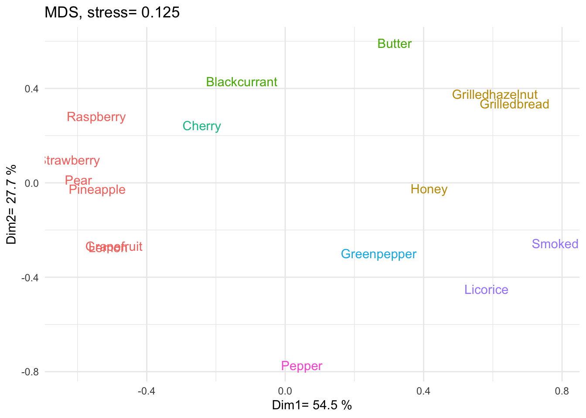
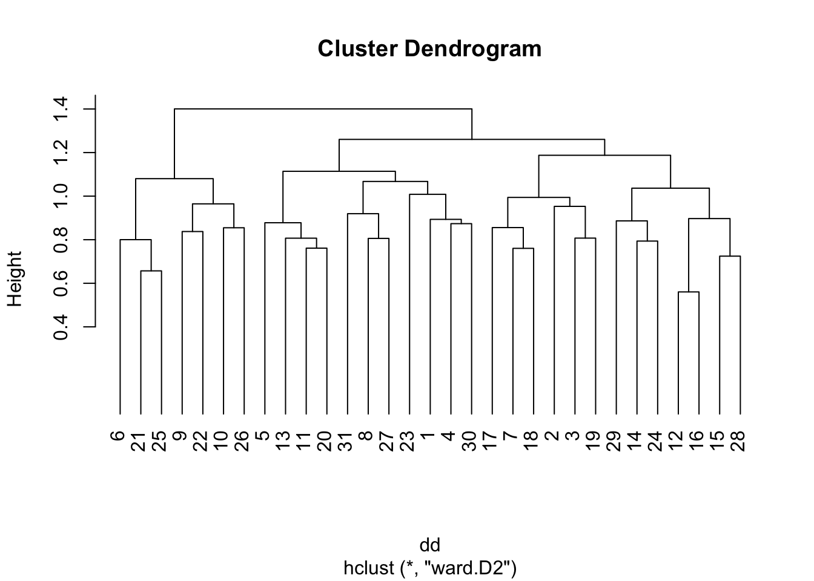
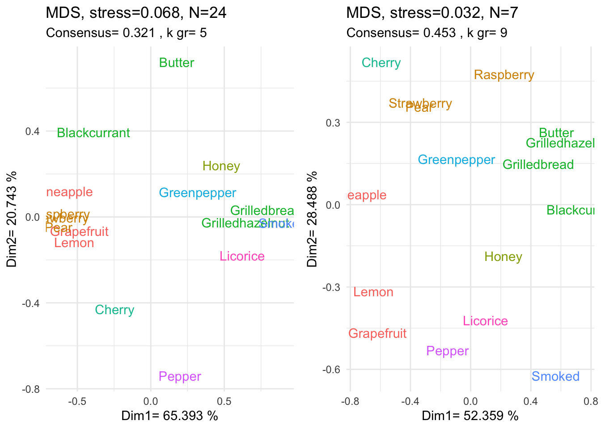

name | Produit 1 | Produit 2 | Produit 3 | Produit 4 | Produit 5 |
|---|---|---|---|---|---|
P1 | 1 | 1 | 1 | 2 | 2 |
P2 | 1 | 1 | 2 | 2 | 2 |
name | Gr P2 | Sep P2 |
|---|---|---|
Gr P1 | 4 | 2 |
Sep P1 | 2 | 2 |
On cherche une partition qui soit la plus proche possible de l’ensemble des partitions données par les \(N\) individus. On la nommera partition consensuelle.
Cela nécessite de définir une notion de proximité entre partitions.
On demande à 2 participants de partager en groupes 5 produits numérotés \(\{1,2,3,4,5\}\) On obtient les deux partitions suivantes : \(P_1=\{ \{1,2,3\},\{4,5\} \}\) et \(P_2=\{ \{1,2\},\{3,4,5\} \}\). On va mesurer l’accord entre ces deux partitions en regardant si chaque paire de produits est groupé dans \(P_1\) (Gr P1), séparé dans \(P_1\) (sep P1). De même dans \(P_2.\)
name | Produit 1 | Produit 2 | Produit 3 | Produit 4 | Produit 5 |
|---|---|---|---|---|---|
P1 | 1 | 1 | 1 | 2 | 2 |
P2 | 1 | 1 | 2 | 2 | 2 |
name | Gr P2 | Sep P2 |
|---|---|---|
Gr P1 | 4 | 2 |
Sep P1 | 2 | 2 |
Courcoux et al. (2014) définissent le Rand Index \(RI(P_1,P_2)=\dfrac{a+d}{P(P-1)/2}\) où \(a+d\) est le nombre d’accord entre \(P_1,P_2\) (ie lorsqu’elles regroupent ou qu’elles séparent les deux produits).
On a \(0\leq RI(P_1,P_2) \leq 1\) (0 désaccord total et 1 accord total).
La fonction RandIndex du package FreeSortR permet d’effectuer ce calcul :
RandIndex(P1,P2)$Rand[1] 0.6Il augmente en moyenne lorsque le nombre \(N\) de sujets augmente. La solution est de remplacer \(RI\) par \[ ARI(P_1,P_2)=\dfrac{RI(P_1,P_2)-\overline{RI}}{1-\overline{RI}} \]
où \(\overline{RI}\) est la moyenne du \(RI\) pour 2 partitions dont le consensus n’est dû qu’au hasard.
Conséquences
RandIndex(P1,P2)$AdjustedRand[1] 0.1666667On cherche une partition \(P\) telle que la moyenne des \(ARI\) de chaque sujet avec cette partition est maximale c’est à dire \(C_M(P)=\frac 1{N}\sum_{n=1}^N ARI(P,P_n)\) maximale.
On procède de façon itérative en fixant le nombre \(K\) de classes dans la partition consensuelle. On choisit la valeur de \(K\) pour laquelle \(C_M(P)\) est maximal.
Cet algorithme est sensible au choix de la première partition. Plusieurs choix sont proposés dans FreeSorteR on choisira :
cons=ConsensusPartition(tl,ngroups=0,type="fusion")
Fusion algorithm. May be time consuming.Partition en 7 classes avec \(C_M(P)=0.308\)
name | . |
|---|---|
Lemon | 1 |
Grapefruit | 1 |
Pineapple | 1 |
Pear | 1 |
Honey | 2 |
Butter | 3 |
Grilledbread | 2 |
Grilledhazelnut | 2 |
Strawberry | 1 |
Raspberry | 1 |
Cherry | 4 |
Blackcurrant | 3 |
Greenpepper | 5 |
Smoked | 6 |
Pepper | 7 |
Licorice | 6 |
config=getConfig(resMds)
colnames(config)=paste("Dim",1:3,sep="")
Consensus=as.factor(cons$Consensus)
ggplot(config,aes(x=Dim1,y=Dim2,label=rownames(config),color=Consensus))+
geom_text()+
xlab(paste("Dim1=",round(resMds@Percent[1]*100,1),"%"))+
ylab(paste("Dim2=",round(resMds@Percent[2]*100,1),"%"))+
ggtitle(paste("MDS, stress=",round(resMds@Stress,3)))+
theme_minimal()+theme(legend.position = "none")
L’\(ARI\) permet de définir une distance entre les sujets, \[ d_{ARI}(S_i,S_j)=\sqrt{1-ARI(P_i,P_j)} \] où le sujet \(S_i\) propose la partition \(P_i.\)
On peut alors réaliser une classification ascendante hierarchique avec cette distance :
i=j=1
d_ARI<-function(df,i,j){
return(sqrt(1-RandIndex(df[,i],df[,j])$AdjustedRand))
}
N<-dim(df)[2]
M<-matrix(NA,nrow=N,ncol=N)
for(i in 1:N){
for(j in 1:N){
M[i,j]<-d_ARI(df,i,j)
}
}
dd <- as.dist(M)
res<-hclust(dd,method="ward.D2")
plot(res,hang=-1,ylim=c(0,1.5))
On choisit de former deux groupes d’individus :
gr<-cutree(res,2)Ces groupes sont déséquilibrés et constitués de
flextable(as.data.frame(table(gr)))gr | Freq |
|---|---|
1 | 24 |
2 | 7 |
On peut ainsi mettre en évidence le consensus pour chacun de ces deux groupes :
df1<-df[,gr==1]
ndim=3
tl1<-SortingPartition(df1)
resMds1<-MdsSort(tl1,ndim=ndim)
config1<-getConfig(resMds1)
cons1<-ConsensusPartition(tl1,ngroups=0)
config1=getConfig(resMds1)
colnames(config1)=paste("Dim",1:ndim,sep="")
Consensus1=as.factor(cons1$Consensus)
p1=ggplot(config1,aes(x=Dim1,y=Dim2,label=rownames(config1),color=Consensus1))+
geom_text()+
xlab(paste("Dim1=",round(resMds1@Percent[1]*100,3),"%"))+
ylab(paste("Dim2=",round(resMds1@Percent[2]*100,3),"%"))+
labs(
title=paste("MDS, stress=",round(resMds1@Stress,3),", N=",sum(gr==1),sep=""),
subtitle = paste("Consensus=",round(cons1$Crit,3),", k gr=",max(cons1$Consensus)),sep="")+
theme_minimal()+theme(legend.position = "none")
df1<-df[,gr==2]
tl1<-SortingPartition(df1)
resMds1<-MdsSort(tl1,ndim=ndim)
config1<-getConfig(resMds1)
cons1<-ConsensusPartition(tl1,ngroups=0)
config1=getConfig(resMds1)
colnames(config1)=paste("Dim",1:ndim,sep="")
Consensus1=as.factor(cons1$Consensus)
p2=ggplot(config1,aes(x=Dim1,y=Dim2,label=rownames(config1),color=Consensus1))+
geom_text()+
xlab(paste("Dim1=",round(resMds1@Percent[1]*100,3),"%"))+
ylab(paste("Dim2=",round(resMds1@Percent[2]*100,3),"%"))+
labs(
title=paste("MDS, stress=",round(resMds1@Stress,3),", N=",sum(gr==2),sep=""),
subtitle = paste("Consensus=",round(cons1$Crit,3),", k gr=",max(cons1$Consensus)),sep="")+
theme_minimal()+theme(legend.position = "none")
grid.arrange(p1,p2,ncol=2)